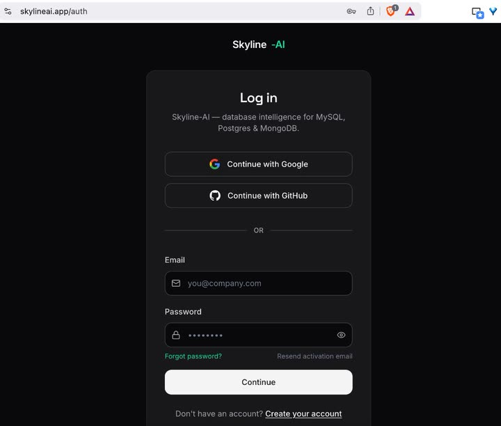

Cloud & sqllens.ai account
Sign in for cloud‑backed AI routing, usage metering and team features — or stay fully offline.
Overview
SQLLens.AI runs without an account. Signing in to Skyline‑AI (sqllens.ai) unlocks managed AI routing across providers, shared usage tracking, and (where available) team features. Local connections and queries stay on your machine either way.
Sign in & sign out
Open the Account panel in the SQLLens.AI sidebar and choose Sign in. VS Code opens your browser to the Skyline‑AI login page:
https://www.skylineai.app/auth — product home: https://www.skylineai.app/
After you authenticate, return to VS Code; the extension stores your session locally. Sign out from the same Account panel to revoke the local session.
Web login (Skyline‑AI)
On the login page you can use:
- Continue with Google or Continue with GitHub
- Email and Password, then Continue
- Forgot password? or Resend activation email if needed
- Create your account at the bottom if you do not have one yet

skylineai.app/auth — social sign‑in or email and password.The default login URL matches skyline-mysql.skylineApi.authPageUrl in Settings → sqllens.ai / Skyline API. Change it only if your organization hosts a custom auth page.
Usage & credits
The account panel shows current credit balance and AI usage for the period. Click Open dashboard to open your plan and usage on skylineai.app (invoices, plan, and provider routing).
Offline / disabling cloud API
Turn off cloud routing under Settings → sqllens.ai / Skyline API (skyline-mysql.skylineApi.enabled). With cloud disabled, only providers you've configured with your own API keys will be used.
You can run a fully local LLM (for example Ollama) without signing in at all.
Tree gate & diagnose
If the connections tree appears empty after sign‑in, choose Diagnose in the Account panel. SQLLens.AI checks your session, network reachability of the Skyline API (api.skylineai.app by default), and any restricted‑mode flag set by your team.